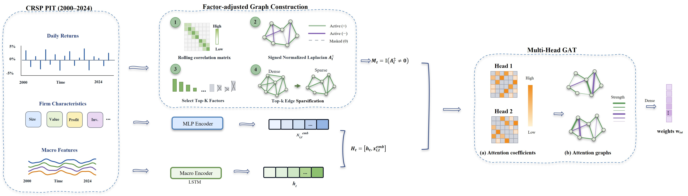
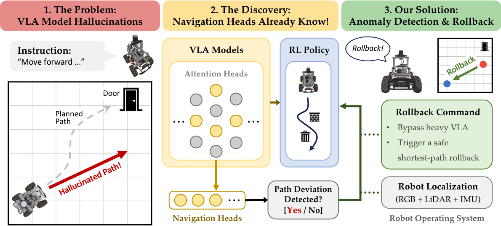
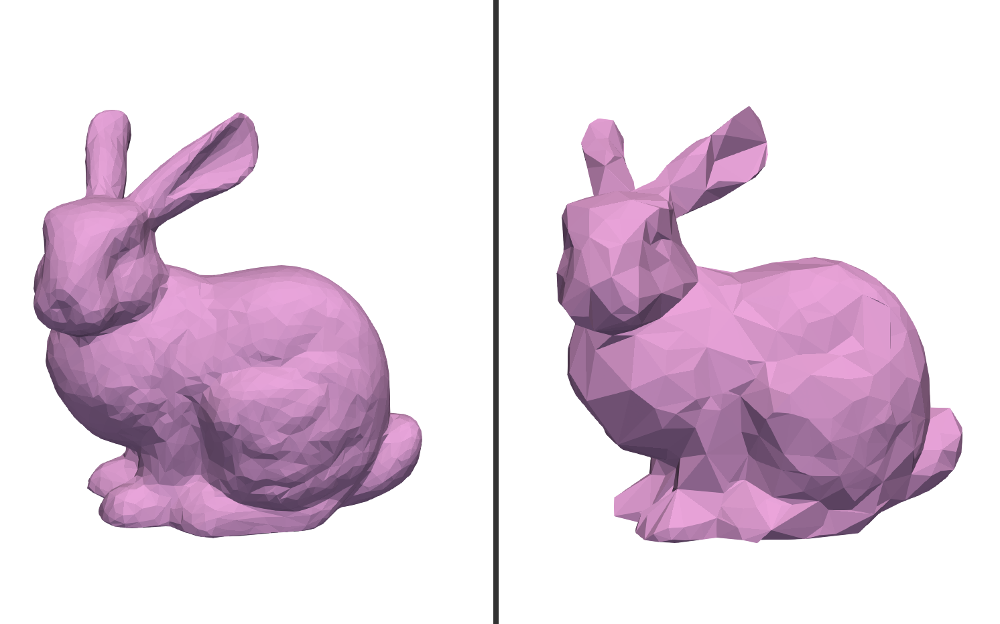
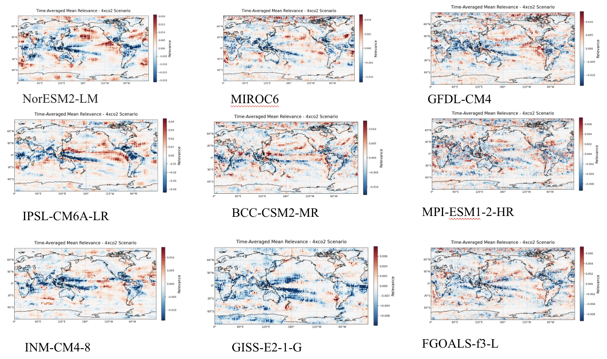

About Me
I am currently a third year student at UCLA, majoring Mathematics with a specilization in computing.
Favorite games: Mario Oddesey and Legend of Zelda
Favorite movie/shows: La La Land, Sofia the First, and all the Pixar movies!!!
some hobbies...? I love cooking (check some of my recipes here!), reading, and taking photos! (I used to dream about becoming a professional photographer)
Projects

Graph-Informed Deep Factor Model for Statistical Arbitrage
Working with Prof.Mihai Cucuringu on a quantitative finance research project, we develop a nonlinear single-factor model whose per-stock loadings are conditioned on a data-driven signed graph of residual dependencies. A signed-edge graph attention layer combines the graph with firm characteristics and macroeconomic state, producing residuals with stronger daily mean-reversion. On CRSP point-in-time S&P 500 constituents (2015–2024), our model outperforms both classical factor benchmarks and state-of-the-art deep-learning baselines.
View Code
Your Vision-Language-Action Model Already Has Attention Heads For Path Deviation Detection
Working with Jaehwan Jeong and collaborators, we develop a training-free framework for detecting navigation failures in vision-language-action models by monitoring a small subset of attention heads. The system enables real-time anomaly detection and safe recovery via a lightweight reinforcement learning policy, improving robustness in both simulated and real-world robotic navigation.
Paper
Reinforcement Learning for 3D Mesh Optimization
Working with Prof. Jiayin (Kay) Lu in the UCLA Artificial Intelligence & Visual Computing (AIVC) Lab, We develop a reinforcement learning framework that formulates 3D mesh refinement as a sequential decision problem. Using Actor–Critic and PPO methods, the model learns vertex updates that improve element quality (aspect ratio, distortion, signed volume consistency) while preserving geometric constraints.
View Code
AgriNav-Sim2Real: A Multi-Sensor Dataset for Drone/UGV Navigation in Greenhouses (Synthetic + Real)
Working with Dr. Tuan-Anh Vu and Prof. M. Khalid Jawed in the structures-computer interaction, We developed AgriNav-Sim2Real, a large-scale synthetic–real greenhouse navigation dataset integrating RGB-D, NIR, LiDAR, IMU, and GPS across Unreal Engine simulations and field recordings. The project establishes benchmark tasks for navigation, segmentation, depth estimation, and sim-to-real transfer, enabling rigorous evaluation of multimodal perception models in agricultural environments.
Project Page
Investigating pattern effects on global energy budget using interpretable neural networks
In collaboration with Prof. Dong Yue and Dr.Huaiyu Wei, We applied explainable artificial intelligence (XAI) to analyze global climate feedback parameters under abrupt 4xCO2 warming scenarios. By utilizing Layerwise Relevance Propagation (LRP), we generated high-fidelity attribution maps to visually identify the specific geographic regions driving climate sensitivity in global climate models
Project PageContact
LinkedIn: My linkedin profile
Email: evelynzhu88@ucla.edu
Google Scholar: My Google Scholar profile